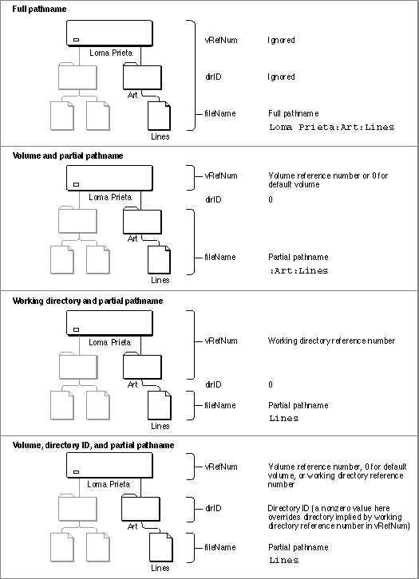

HFS Specifications
The simplest way to identify a mounted volume is by giving its volume reference number. The simplest way to identify a file or directory located on a mounted volume is by providing a file system specification. In some cases, however, you might not be able to use file system specifications.For example, the low-level File Manager routines do not accept file system specifications, and so you must specify files and directories by some other method. You must also use another file-identification method when you use the high-level HFS routines that existed
prior to the introduction of the routines that acceptFSSpecrecords as file or directory specifications. This section summarizes the conventions the File Manager uses to interpret the various volume, directory, and file specifications that are available even when file system specifications are not.The File Manager recognizes three kinds of file system objects: files, directories, and volumes. You can identify them using various methods.
Object Method of identification File Filename Directory Directory name Directory ID Working directory reference number, which also implies a volume Volume Volume name Volume reference number Working directory reference number, which also implies a directory In HFS, you can pass a complete file specification in any of several ways:
A full pathname consists of the name of the volume, the names of all directories between the root directory and the target, and the name of the target. A full pathname starts with a character other than a colon and contains at least one colon. If the first character is a colon, or if the pathname contains no colons, it is a partial pathname. If a partial pathname starts with the name of a parent directory, the first character in the pathname must be a colon. If a partial pathname contains only the name of the target file or directory, the leading colon is optional.
- full pathname
- volume reference number and partial pathname
- working directory reference number and partial pathname
- volume reference number, directory ID, and partial pathname
You can identify a volume in the
vRefNumparameter by volume reference number or drive number, but volume reference number is preferred. A value of 0 represents the default volume. A volume name in the pathname overrides any other volume specification. Unlike a volume name, a volume reference number is guaranteed to be unique. It changes, however, each time a volume is mounted.A working directory reference number represents both the directory ID and the volume reference number. If you specify any value other than 0 for the
dirIDparameter, that value overrides the directory ID implied by a working directory reference number in the volume parameter. The volume specification remains valid.Figure 2-3 illustrates the standard ways to identify a file in HFS.
Figure 2-3 Identifying a file in HFS
